Подборку собрали 7 ноября, прошедшие события скрыты. Свежая афиша — на главной
Подборка для компании · данные на 7 ноября
Куда пойти с друзьями в Петербурге
65 планов для компании: бани, бары и раковарни, боулинг, тиры, караоке и компьютерные клубы. Ниже — ещё 57 мест, куда удобно идти большой компанией, и 18 событий на ближайшие две недели. Отметь пару вариантов и кинь ссылку в общий чат: каждый выберет, куда и в какие дни может.
- 65 планов
- 57 мест
- 18 событий
Планы для компании 24 из 65
- Аквапарк «Питерлэнд» · Аквапарк · м. Беговая
- 1 минута пешкомПапаша Клаусс · Ресторан-пивоварня
Горки и тропическое тепло в любую погоду, а пивоварня с видом на залив — прямо по соседству.
Открыть план: Аквапарк и пивоварняПозвать сюда: Аквапарк и пивоварня
Фото: Vasyatka1, CC BY-SA 4.0 · Wikimedia Commons
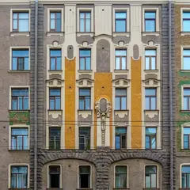
- Василеостровские бани · Баня · м. Василеостровская
- 5 минут пешкомТолстый фраер на Васильевском · Пивной ресторан
Старая баня у метро: русская парная, хаммам и купель без пафоса, а потом 5 минут пешком — пивной ресторан в советском антураже.
Открыть план: Баня на Васильевском и пиво послеПозвать сюда: Баня на Васильевском и пиво после
Фото: Никонико962, CC BY-SA 4.0 · Wikimedia Commons
- Газпром Арена · Стадион · м. Зенит
- 18 минут пешкомПапаша Клаусс · Ресторан-пивоварня
Трибуны на Крестовском и атмосфера домашнего матча, а после игры 18 минут пешком до пивоварни у залива — разобрать голы под свежее пиво.
Открыть план: Матч «Зенита» и пивоварня у заливаПозвать сюда: Матч «Зенита» и пивоварня у залива
Фото: Ivan Smelov, CC BY-SA 4.0 · Wikimedia Commons
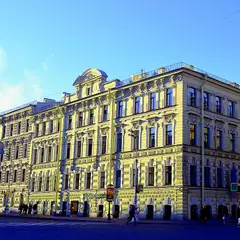
- Центральный военно-морской музей · Музей · м. Садовая
- 6 минут пешкомShamrock · Паб
Модели кораблей, оружие и история флота в Крюковых казармах, а потом 6 минут пешком — шумный ирландский паб напротив Мариинского с трансляциями.
Открыть план: Морской музей и паб у МариинкиПозвать сюда: Морской музей и паб у Мариинки
Фото здания: GAlexandrova, CC BY-SA 4.0 · Wikimedia Commons
- Siberia · Приватная баня · м. Нарвская
- 7 минут пешкомAF Brew Taproom · Крафтовый бар
Камерный банный клуб у Обводного: отдельная парная и парение с мастером, а потом 7 минут пешком — флагманский тапрум AF Brew.
Открыть план: Парение с мастером и тапрум AF BrewПозвать сюда: Парение с мастером и тапрум AF Brew
Фото: НАндреев, CC BY-SA 4.0 · Wikimedia Commons
- Петропавловская крепость · Крепость · м. Горьковская
- 18 минут пешкомManneken Pis на Каменноостровском · Паб
Петропавловка к полудню — пушка бьёт с бастиона, вокруг вид на Дворцовую, — а потом прогулка к Горьковской, 18 минут пешком, в бельгийскую пивную.
Открыть план: Полуденный выстрел и бельгийское пивоПозвать сюда: Полуденный выстрел и бельгийское пиво
Фото: Vadim Fedin, CC BY 3.0 · Wikimedia Commons
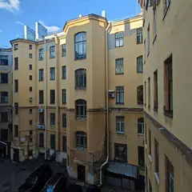
- Kiks на Петроградке · Бильярдная · м. Петроградская
- 7 минут пешкомManneken Pis на Каменноостровском · Паб
Столы для пула и крафт на Каменноостровском, а потом 7 минут пешком — бельгийская пивная с траппистами и мидиями.
Открыть план: Пул на Петроградке и бельгийское пивоПозвать сюда: Пул на Петроградке и бельгийское пиво
Фото здания: Bestalex, CC BY-SA 4.0 · Wikimedia Commons
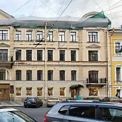
- Ярумэн · Раменная · м. Адмиралтейская
- 1 минута пешкомТолстый фраер на Малой Морской · Пивной ресторан
Густой рамен у Невского, а через дорогу — пивной ресторан в интерьере подводной лодки: большой выбор пива и спорт на большом экране.
Открыть план: Рамен и матч в подводной лодкеПозвать сюда: Рамен и матч в подводной лодке
Фото здания: Анастасия Юрьевна Львова, CC BY-SA 4.0 · Wikimedia Commons
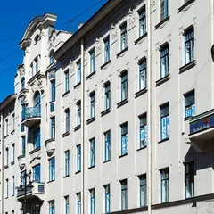
- Хроники · Рюмочная · м. Чернышевская
- 8 минут пешкомHarry Not Original Pub · Паб
Бутерброд с килькой и чача в рюмочной, задавшей моду на новые рюмочные, а потом 8 минут пешком — английский паб с трансляциями матчей.
Открыть план: Рюмочная и паб с псом ГарриПозвать сюда: Рюмочная и паб с псом Гарри
Фото здания: Никонико962, CC BY-SA 4.0 · Wikimedia Commons
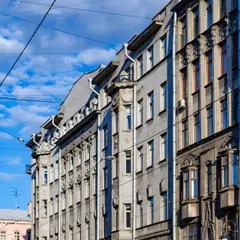
- Стендап-клуб на Белинского · Стендап-клуб · м. Маяковская
- 1 минута пешкомЧешская пивница · Пивной ресторан
Концерт в небольшом стендап-зале у Литейного, а потом — пражская пивная почти по соседству: разлить и обсудить лучшие шутки.
Открыть план: Стендап и чешская пивницаПозвать сюда: Стендап и чешская пивница
Фото здания: Никонико962, CC BY-SA 4.0 · Wikimedia Commons
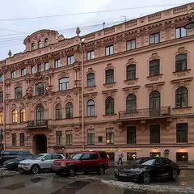
- Бекицер · Израильский стритфуд · м. Достоевская
- 2 минуты пешкомMollie's Irish Bar · Паб
Фалафель и шаварма в пите, а через пару шагов — один из старейших ирландских пабов улицы: гиннесс и футбол на экранах.
Открыть план: Фалафель и футбол на РубинштейнаПозвать сюда: Фалафель и футбол на Рубинштейна
Фото здания: Bestalex, CC BY-SA 4.0 · Wikimedia Commons
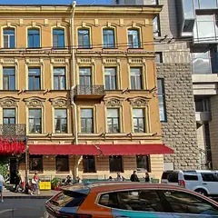
- Мама Тата · Кафе · м. Гостиный двор
- 6 минут пешкомЧешская пивница · Пивной ресторан
Сытные хинкали на большую компанию, а потом 6 минут пешком — пражская пивная с разливным, рулькой и экраном с футболом.
Открыть план: Хинкали и чешское под матчПозвать сюда: Хинкали и чешское под матч
Фото здания: Анастасия Юрьевна Львова, CC BY-SA 4.0 · Wikimedia Commons
- Взаперти на Казанской · Квест · м. Невский проспект
- 6 минут пешкомBrewmen Taproom · Крафтовый бар
Хоррор с живыми актёрами у Казанского собора, а потом 6 минут пешком — тапрум Brewmen, чтобы выдохнуть и вспомнить, кто громче всех кричал.
Открыть план: Хоррор-квест и тапрумПозвать сюда: Хоррор-квест и тапрум
Фото: Vladimir Ivanov, общественное достояние · Wikimedia Commons
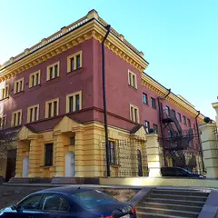
- Бани на Ярославском · Баня · м. Удельная
Добротная баня у Удельной: общие отделения с русской парной, хаммамом и бассейном — без понтов, зато с хорошим паром.
Открыть план: Бани на ЯрославскомПозвать сюда: Бани на Ярославском
Фото: GAlexandrova, CC BY-SA 4.0 · Wikimedia Commons
- Union · Бар · м. Маяковская
Диджеи, длинная стойка и двор, который летом превращается в танцпол, — бар, где компанию точно не придётся развлекать.
Открыть план: Большой бар на ЛитейномПозвать сюда: Большой бар на Литейном
Фото здания: Таисия Руссия, CC BY-SA 4.0 · Wikimedia Commons
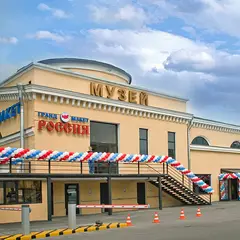
- Гранд Макет Россия · Музей · м. Московские ворота
Огромный макет страны с движущимися поездами и машинами, где по кругу сменяются день и ночь, — залипают все.
Открыть план: Гранд Макет РоссияПозвать сюда: Гранд Макет Россия
Фото: Grandmaket, CC BY-SA 3.0 · Wikimedia Commons
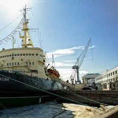
- Ледокол «Красин» · Музей-корабль · м. Горный институт
Капитанская рубка, машинное отделение и арктическая история на ледоколе 1916 года у набережной.
Открыть план: Ледокол «Красин»Позвать сюда: Ледокол «Красин»
Фото: Andrey Korchagin, CC BY-SA 2.0 · Wikimedia Commons
- Музей железных дорог России · Музей · м. Балтийская
Огромный ангар у Балтийского вокзала с паровозами, вагонами и тепловозами — в кабины можно забраться.
Открыть план: Паровозы, в которые можно зайтиПозвать сюда: Паровозы, в которые можно зайти
Фото: Анастасия Юрьевна Львова, CC BY-SA 4.0 · Wikimedia Commons
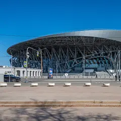
- СКА Арена · Хоккейная арена · м. Парк Победы
Огромная новая арена: матч КХЛ с шоу на льду и громкими трибунами — вечер для компании болельщиков.
Открыть план: Хоккей СКАПозвать сюда: Хоккей СКА
Фото: Florstein, CC BY-SA 4.0 · Wikimedia Commons
- Кручёных · Бильярдная · м. Адмиралтейская
- 3 минуты пешкомРусская рюмочная №1 · Рюмочная-ресторан
Бильярд с винтажным настроением у Новой Голландии, а потом пара минут пешком — свои настойки и русские закуски в рюмочной у Исаакия.
Открыть план: Винтажный бильярд и настойкиПозвать сюда: Винтажный бильярд и настойки
- Дегтярные бани · Банный комплекс · м. Площадь Восстания
- 1 минута пешкомБанщики · Ресторан
Несколько классов, хаммам и купели в большом банном комплексе, а ужин — в соседнем ресторане «Банщики»: пироги, заготовки и шашлык.
Открыть план: Дегтярные бани и ужин в «Банщиках»Позвать сюда: Дегтярные бани и ужин в «Банщиках»
- Мытнинские бани · Баня на дровах · м. Площадь Восстания
- 13 минут пешкомХоровод · Крафтовый бар
Старинная баня на Песках, где держатся традиции дровяного пара, а потом 13 минут пешком — бар пивоварни AF Brew со свежими сортами и запечённым костным мозгом.
Открыть план: Дровяной пар и крафт на НекрасоваПозвать сюда: Дровяной пар и крафт на Некрасова
- Казачьи бани · Баня · м. Пушкинская
- 9 минут пешкомДиккенс · Паб
Крепкая парная в общем классе или люкс с бассейном для компании, а потом 9 минут пешком — английский паб с футболом.
Открыть план: Казачьи бани и паб на ФонтанкеПозвать сюда: Казачьи бани и паб на Фонтанке
- Colizeum Premium · Васильевский · Компьютерный клуб · премиум · м. Василеостровская
- 2 минуты пешкомТолстый фраер на Васильевском · Пивной ресторан
Мощные ПК и удобные кресла в премиальном зале у Василеостровской, а потом пара минут пешком — пивной ресторан с матчами на экранах.
Открыть план: Катка на Васильевском и пивоПозвать сюда: Катка на Васильевском и пиво


Места для большой компании 24 из 57
ул. Рубинштейна, 13
Новое
Коктейльный бар без вывески: замкнутый полутёмный зал в строгом минимализме, где всё внимание на стойке. Дверь легко пропустить даже на Рубинштейна.
Подробнее и маршрут: АрхитекторПозвать сюда: Архитектор
Фото здания: Александр Сигачёв, CC BY-SA 4.0 · Wikimedia Commons
Ярославский пр., 16
Новое
Добротная баня недалеко от Удельной: общие отделения с русской парной, хаммамом и бассейном, а для особого случая — премиум-залы.
Подробнее и маршрут: Бани на ЯрославскомПозвать сюда: Бани на Ярославском
Фото: GAlexandrova, CC BY-SA 4.0 · Wikimedia Commons
Средний пр. В.О., 22
Новое
Старая баня у метро Василеостровская: русская парная, хаммам, бассейн и купель — без пафоса и за разумные деньги.
Подробнее и маршрут: Василеостровские баниПозвать сюда: Василеостровские бани
Фото: Никонико962, CC BY-SA 4.0 · Wikimedia Commons
Казанская ул., 7
Новое
Квест-центр у Казанского собора: хорроры с живыми актёрами и лаунж, где можно отметить победу после игры.
Подробнее и маршрут: Взаперти на КазанскойПозвать сюда: Взаперти на Казанской
Фото: Vladimir Ivanov, общественное достояние · Wikimedia Commons
ул. Восстания, 19
Новое
Английский паб с псом Гарри на гербе: пилснер и сидр на кранах, бургеры и трансляции матчей; на важные игры бронируйте стол.
Подробнее и маршрут: Harry Not Original PubПозвать сюда: Harry Not Original Pub
Фото здания: Никонико962, CC BY-SA 4.0 · Wikimedia Commons
Каменноостровский пр., 26-28
Новое
Вторая бильярдная сети на Каменноостровском: столы для пула, крафт и кухня — хорошее продолжение прогулки.
Подробнее и маршрут: Kiks на ПетроградкеПозвать сюда: Kiks на Петроградке
Фото здания: Bestalex, CC BY-SA 4.0 · Wikimedia Commons
ул. Рубинштейна, 36
Новое
Один из самых старых ирландских пабов на Рубинштейна: гиннесс, фиш-энд-чипс и футбол на экранах; в пятницу и субботу открыт до трёх.
Подробнее и маршрут: Mollie's Irish BarПозвать сюда: Mollie's Irish Bar
Фото здания: Bestalex, CC BY-SA 4.0 · Wikimedia Commons
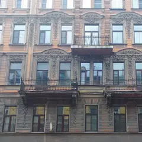
ул. Марата, 35
КруглосуточноНовое
Отдельные караоке-залы в центре: поёшь только со своими, есть камерные сцены и кинозалы для своей компании.
Подробнее и маршрут: PiterParty на МаратаПозвать сюда: PiterParty на Марата
Фото: Максим Хлопов, CC BY-SA 4.0 · Wikimedia Commons
ул. Декабристов, 27
Новое
Ирландский паб напротив Мариинского театра: гиннесс, шумная атмосфера и трансляции футбола; открыт до двух ночи.
Подробнее и маршрут: ShamrockПозвать сюда: Shamrock
Фото здания: GAlexandrova, CC BY-SA 4.0 · Wikimedia Commons
ул. Решетникова, 12
Новое
Гастрорынок у Московских ворот: ресторанные корнеры и регулярные фестивали кухни и культуры.
Подробнее и маршрут: Московский рынокПозвать сюда: Московский рынок
Фото: Анастасия Юрьевна Львова, CC BY-SA 4.0 · Wikimedia Commons
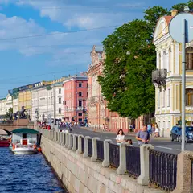
наб. реки Фонтанки, 27
Новое
Отсюда уходят прогулки по рекам и каналам — город с воды; расписание рейсов в межсезонье лучше проверить заранее.
Подробнее и маршрут: Причал «Аничков мост»Позвать сюда: Причал «Аничков мост»
Фото: Никонико962, CC BY-SA 4.0 · Wikimedia Commons
наб. реки Фонтанки, 108
Новое
Английский паб на Фонтанке с классической пабной кухней и показом футбола — давно проверенное место для матчей.
Кирочная ул., 8Б
Новое
Маленький гастробар, с которого началась новая ресторанная волна города: севиче, бычьи хвосты, терраса у кирхи.
Подробнее и маршрут: Duo GastrobarПозвать сюда: Duo Gastrobar
Большой пр. В.О., 16/14Б
Новое
Обновлённый исторический рынок: фермерские прилавки и много корнеров с едой — каждый выберет своё.
Подробнее и маршрут: Василеостровский рынокПозвать сюда: Василеостровский рынок
Фонарный пер., 1
Новое
Бани XIX века у Мойки после бережной реставрации: мраморные залы, исторический бассейн, парение и массаж — почти музей с паром.
Подробнее и маршрут: Фонарные баниПозвать сюда: Фонарные бани
Невский пр., 47
КруглосуточноНовое
Ночной бар-клуб у пересечения Невского с Владимирским: коктейли, костюмированные вечеринки и танцы, в выходные до семи утра.
Лиговский пр., 30
Новое
Фудхолл на 5-м этаже «Галереи»: десятки кухонь мира в одном зале и сезонные фуд-фестивали.
Лермонтовский пр., 43/1
Новое
Ресторан-бар на 18-м этаже отеля «Азимут»: коктейли с видом на Исаакий, Лахту и крыши центра, особенно хорош на закате.
Каменноостровский пр., 12
Новое
Бельгийская пивная у «Горьковской»: траппистские сорта, мидии и картофель фри; в пятницу и субботу до трёх ночи.
Подробнее и маршрут: Manneken Pis на КаменноостровскомПозвать сюда: Manneken Pis на Каменноостровском
Большая Конюшенная ул., 14
Новое
Ирландский паб у Невского: деревянная стойка, флаги и экраны с матчами; по пятницам и субботам до трёх ночи.
Подробнее и маршрут: O'Hooligans на КонюшеннойПозвать сюда: O'Hooligans на Конюшенной
Колокольная ул., 4
КруглосуточноНовое
Британский паб в переулке у Владимирской: эль на кранах, пабная еда и работа до пяти утра — выручает, когда всё вокруг закрылось.
Соляной пер., 8
Новое
Квест-центр у Чернышевской: сказочные и киношные сюжеты на двух этажах и лаунж, где удобно собраться компанией.
Подробнее и маршрут: Взаперти на СоляномПозвать сюда: Взаперти на Соляном
ул. Шаврова, 26
Новое
Баня только для женщин: сауна, хаммам, уходовые средства и чай уже входят в почасовую цену — отличный вариант для девичника.
Большой Казачий пер., 11
КруглосуточноНовое
Простая районная баня у Сенной без лишнего лоска: крепкая парная в общем классе и люксы с бассейном для компании.
Куда сходить компанией в ближайшие две недели 8 из 18
Замок на Невском · м. Маяковская · от 1 600 ₽ · 12+
Иммерсивное мистическое шоу: герои «Шинели», «Носа» и «Вия» в одном сюжете, а зритель может вмешаться в ход действия. По пятницам и субботам в 19:00, недорого.
Подробнее: Петербург ГоголяПозвать сюда: Петербург ГоголяБилеты : Петербург Гоголя (страница с билетами, откроется в новой вкладке)
Temple of Deer · м. Площадь Ленина · 3 500–20 000 ₽ · 18+
Ночной транс-фестиваль Радио Рекорд: семь тематических миров со своим светом и визуалом, от морских глубин до космоса. Для тех, кто готов танцевать до утра.
Подробнее: Трансмиссия «Портал»Позвать сюда: Трансмиссия «Портал»Билеты : Трансмиссия «Портал» (страница с билетами, откроется в новой вкладке)
Центр современного искусства им. Сергея Курёхина · м. Горный институт
Юбилейный, десятый фестиваль уличного искусства: больше тридцати стрит-артистов переносят свои работы в залы Центра Курёхина. В программе есть лекции о граффити.
Подробнее: Арт-Стена. СуперноваПозвать сюда: Арт-Стена. СуперноваБилеты : Арт-Стена. Супернова (страница с билетами, откроется в новой вкладке)
Иммерсивный театр «Морфеус» · м. Адмиралтейская · от 4 500 ₽ · 18+
Иммерсивный тру-крайм: вы присяжные, изучаете улики по делу о пропавшем подростке и решаете судьбу подозреваемого. Группа 6–14 человек, начало в 18:00–19:45.
Подробнее: Судный деньПозвать сюда: Судный деньБилеты : Судный день (страница с билетами, откроется в новой вкладке)
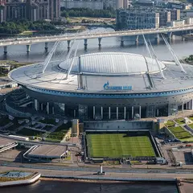
Газпром Арена · м. Зенит
В воскресенье вечером «Зенит» принимает «Ростов» на «Газпром Арене». После игры можно всей компанией обсудить матч в баре неподалёку.
Подробнее: Зенит — РостовПозвать сюда: Зенит — РостовБилеты : Зенит — Ростов (страница с билетами, откроется в новой вкладке)
Фото: Ivan Smelov, CC BY-SA 4.0 · Wikimedia Commons
Музей «Эрарта» · м. Горный институт · 1 500–2 950 ₽
Кастомные «харлеи», архивные фото и истории владельцев: каждый байк тут — портрет хозяина. Отличный повод привести в музей тех, кто в музеи обычно не ходит.
Подробнее: Harley-Davidson. Дух свободыПозвать сюда: Harley-Davidson. Дух свободыБилеты : Harley-Davidson. Дух свободы (страница с билетами, откроется в новой вкладке)
Фото: Erarta, CC BY 3.0 · Wikimedia Commons
Театр им. Комиссаржевской · м. Гостиный двор · 300–4 000 ₽ · 18+
Булгаковская авантюра времён НЭПа: под вывеской ателье Зоя Пельц копит деньги, чтобы увезти любимого графа в Ниццу. Чёрный юмор, мистика и криминал.
Подробнее: Зойкина квартираПозвать сюда: Зойкина квартираБилеты : Зойкина квартира (страница с билетами, откроется в новой вкладке)
БКЗ «Октябрьский» · м. Площадь Восстания · 3 200–15 000 ₽ · 12+
Шахрин и «Чайф» везут программу к 40-летию Свердловского рок-клуба: хиты плюс редкие песни. Уральский рок в академичном БКЗ — сидячий, но очень душевный вечер.
Подробнее: ЧайфПозвать сюда: ЧайфБилеты : Чайф (страница с билетами, откроется в новой вкладке)
Фото: Florstein, CC BY-SA 4.0 · Wikimedia Commons
Как позвать
- Выбери план, место или событие — в карточке адрес, цены и маршрут в Яндекс Картах.
- Нажми «Позвать сюда» — соберётся приглашение-игра для свидания или голосование для компании.
- Отправь ссылку в любой мессенджер: тебе ответят, а компания отметит, куда и когда может. Бесплатно и без регистрации.